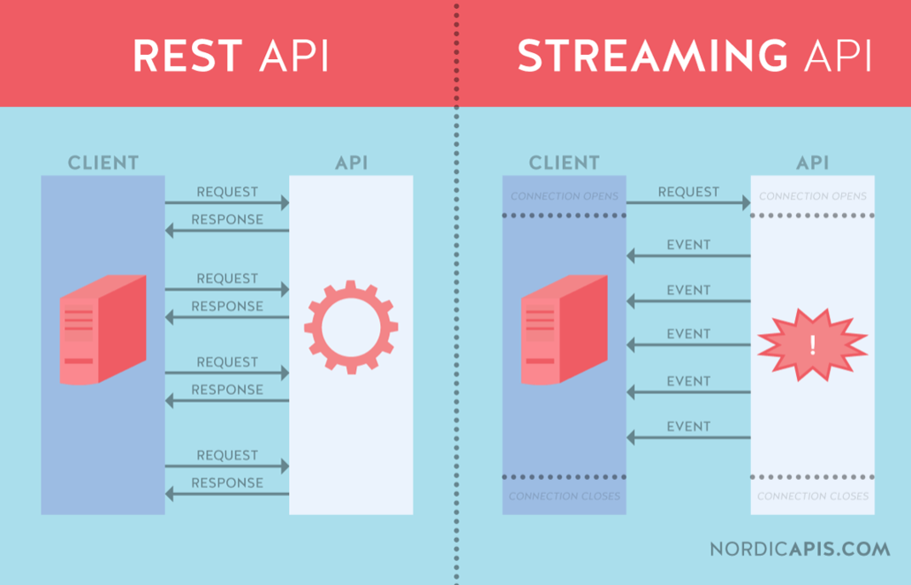

Brondata
Zowel bij het Kadaster als bij veel ontwikkelingen om ons heen (Denk aan Common Ground en DiS-Geo) erkennen we dat het belangrijk is dat we Data bij de bron als belangrijk uitgangspunt hanteren. Maar wat betekent dat?
Data bij de bron
- Data wordt zo dicht mogelijk uit de bron beschikbaar gesteld.
- Er zijn geen onnodige kopiëen
- De actualiteit van data is hierdoor (near) real-time.
Het gebruik van de bron is in discussies vaak ambivalent. Immers, de bron kan betekenen:
- Data rechtstreeks bij de absolute bron (bijvoorbeeld voor de BAG het gemeentelijke systeem waar deze wordt ingevoerd).
- Data rechtstreeks bij de Landelijke Voorziening.
- Data in een centrale informatie voorziening welke verantwoordelijk is voor de levering van data (zoals Datahub, PDOK).
Hierbij concluderen wij dat optie (3) op de korte termijn het meest voor de hand ligt, zodat er middels één voorziening met zeer hoge actualiteit en lage kosten services kunnen worden gecreeerd die dataset-onafhankelijk zijn.
Wel zien we mogelijkheden dit in sommige gevallen te combineren met de situatie omschreven in (2), waarbij we data niet eerst kopiëren naar de centrale informatievoorziening. We beproven dit concreet in onze ontsluiting van de BRT.
Voor de (vaak gedecentraliseerde) situatie beschreven in (1) zien wij vooral op de middellange termijn mogelijkheden. Denk aan ontwikkelingen rondom Blockchain en het Protocol-denken zoals toegepast in de Rijksinnovatie SensRNet.
Huidige situatie
We zien dat bij verschillende services (zowel binnen- als buiten het Kadaster) verschillende actualiteitsniveaus en afstanden tot de bron leven. Soms leven er nog kopiëen tussen de bron en het uiteindelijke ontsluitingskanaal. We kennen momenteel een aantal bronnen voor onze Linked Data en GraphQL leveringen (Self-Service GIS ontsluitingskanalen, zie ook Gebruik).
Rechtstreeks op de LV
Voor de ontsluiting van de BRT als Linked Data geldt dat wij momenteel rechtstreeks aansluiten op de LV database. Dat betekent dat GraphQL rechtstreeks aangeboden kan worden op deze bron en dat Linked Data vanuit deze bron wordt gegenereerd op basis van een nieuwe release (voor de BRT is dit 5 keer per jaar).
PDOK
Voor de ontsluiting van de BGT als Linked Data geldt dat wij momenteel aansluiten op de download levering van de BGT. Deze verversen wij ieder kwartaal. Dit betekent dat wij:"
- De data kwartaallijks downloaden als GML.
- Deze GML uitpakken en importeren in een Postgres (kopie) database.
- GraphQL als levering aansluiten op deze kopie database.
- Vanuit deze download de data transformeren naar Linked Data.
Het resultaat is dat zowel de GraphQL als Linked Data in het slechtste geval een kwartaal achter lopen qua actualiteit.
Note: Het is aannemelijk dat PDOK ook in de toekomst een belangrijke rol blijft spelen als GEO-platform voor al onze GIS gebruikers. De actualiteit van PDOK kan - afhankelijk van de bron - ook goed aansluiten bij die van de bron.
Github leveringen
Voor de BAG geldt dat zij een maandelijkse download beschikbaar stellen van de BAG 2.0 dataset (in GML formaat). Voor dit type bron (download leveringen GML via Github) geldt hetzelfde als voor bovengenoemde PDOK GML levering.
Datahub
In de nabije toekomst zien wij steeds meer bronnen die ontsloten gaan worden bij de Datahub binnen het Kadaster. De datahub dient als centrale voorziening waarvandaan verschillende services / pipelines kunnen worden voorzien van data. Zo ook de analyse trein waarmee wij de gebruikers van het Self-Service Analyse platform van data gaan voorzien.
Dit betekent ook dat de Datahub voor ons geldt als de bron voor Kadastrale datasets.
Uiteraard betekent dit ook dat de datahub aan een aantal uitgangspunten moet voldoen:
- De data in de Datahub is (near)real-time actueel.
- De data in de Datahub komt qua structuur overeen met de brondatabase; Er vinden geen ondoorzichte transformaties plaats.
- Er zijn geen additionele kopiëen tussen de brondatabase en de datahub.
Streaming API
Eén van de services die de Datahub vermoedelijk gaat leveren is een streaming API waarmee zowel pull als subscription based bevragingen mogelijk zijn. Hiermee zullen zowel bulk bevragingen als simpele(re) lookup bevragingen mogelijk zijn.

Aansluiting op de Datahub
Binnen het huidige project (OBDO Integraal Bevragen) willen we aansluiten op de datahub voor in ieder geval de BAG levering. Op deze manier sluiten we met GraphQL aan op de datahub, mogelijk over de GRPC levering. Van een GraphQL levering op deze datahub kan meteen gebruik gemaakt worden. Middels een GraphQL levering maken wij vervolgens Linked Data. Vanuit deze Linked Data registratieve levering creeëren we vervolgens de Knowledge Graph.